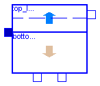

This package contains an ASM1 secondary clarifier model and an interfaces sub-library based on Krebs conceptional model [1]. The settler model consists of two compartments, a "sludge-bed" and a clear water zone above. Main Author: Gerald Reichl Technische Universitaet Ilmenau Faculty of Informatics and Automation Department Dynamics and Simulation of ecological Systems P.O. Box 10 05 65 98684 Ilmenau Germany email: gerald.reichl@tu-ilmenau.de References: [1] P. Krebs and M. Armbruster and W. Rodi: Numerische Nachklaerbeckenmodelle. Korrespondenz Abwasser. 47 (7) 2000. pp 985-999.
Copyright (C) 2003, Gerald Reichl
The Modelica package is free software; it can be redistributed and/or modified under the terms of the Modelica license, see the license conditions and the accompanying disclaimer in the documentation of package Modelica in file "Modelica/package.mo".
WasteWater.ASM1.SecClar.Krebs.SecClarModKrebs
This component models an ASM1 secondary clarifier based on Krebs conceptional model. It consists of two compartments: a "sludge-bed" and a clear water zone above. Parameters: hsc - height of clarifier [m] Asc - surface area of secondary clarifier [m2] ISV - Sludge Volume Index [ml/g]
| Name | Default | Description |
|---|---|---|
| hsc | 4.0 | height of secondary clarifier [m] |
| Asc | 1500.0 | area of secondary clarifier [m2] |
| ISV | 130 | Sludge Volume Index [ml/g] |
model SecClarModKrebs
"ASM1 Secondary Settling Tank Model based on Krebs"
extends WasteWater.Icons.SecClarKrebs;
package WWSC = WasteWater.ASM1.SecClar.Krebs.Interfaces;
extends WWSC.SCVar;
extends WWSC.ratios;
package SI = Modelica.SIunits;
package WI = WasteWater.ASM1.Interfaces;
package WWU = WasteWater.WasteWaterUnits;
parameter SI.Length hsc=4.0 "height of secondary clarifier";
parameter SI.Area Asc=1500.0 "area of secondary clarifier";
parameter WWU.SludgeVolumeIndex ISV=130 "Sludge Volume Index";
Real te "thickening time in sludge layer in [d]";
SI.Length hs "height of sludge layer";
SI.Length he "height of excess layer";
WI.WWFlowAsm1in Feed;
WI.WWFlowAsm1out Effluent;
WI.WWFlowAsm1out Return;
WI.WWFlowAsm1out Waste;
equation
// total sludge concentration in clarifier feed
Xf = 0.75*(Feed.Xs + Feed.Xbh + Feed.Xba + Feed.Xp + Feed.Xi);
// ratios of solid components
rXs = Feed.Xs/Xf;
rXbh = Feed.Xbh/Xf;
rXba = Feed.Xba/Xf;
rXp = Feed.Xp/Xf;
rXi = Feed.Xi/Xf;
rXnd = Feed.Xnd/Xf;
//following expression is only for steady state initial equation of XB and is necessary
//to calculate hs, if there would be problems with "initial()" in your modelica version
//leave out this term and initial XB (or hs) manually e.g. via script-file
if initial() then
XB = Feed.Q/(0.7*(-(Return.Q + Waste.Q)))*Xf;
end if;
//thickening time in sludge layer in [d]
te = 5/7*Asc*hs/(-(Return.Q + Waste.Q));
//sludge concentration in sludge layer (unit of time in [h]) in [g/m3]
XB = (1000/ISV*((te*24)^(1/3)))*1000;
//sludge concentration of return
XR = 0.7*XB;
//ODE of height of sludge layer
der(hs) = (Feed.Q*Xf - (-(Return.Q + Waste.Q))*XR)/(Asc/2*XB);
//height of excess layer
he = hsc - hs;
// ODE of soluble components in first stirrer tank of the excess layer
der(Si1) = (Feed.Q*Feed.Si - (-Effluent.Q)*Si1 - (-(Waste.Q + Return.Q))*Si1)
/(Asc*he/2);
der(Ss1) = (Feed.Q*Feed.Ss - (-Effluent.Q)*Ss1 - (-(Waste.Q + Return.Q))*Ss1)
/(Asc*he/2);
der(So1) = (Feed.Q*Feed.So - (-Effluent.Q)*So1 - (-(Waste.Q + Return.Q))*So1)
/(Asc*he/2);
der(Sno1) = (Feed.Q*Feed.Sno - (-Effluent.Q)*Sno1 - (-(Waste.Q + Return.Q))*
Sno1)/(Asc*he/2);
der(Snh1) = (Feed.Q*Feed.Snh - (-Effluent.Q)*Snh1 - (-(Waste.Q + Return.Q))*
Snh1)/(Asc*he/2);
der(Snd1) = (Feed.Q*Feed.Snd - (-Effluent.Q)*Snd1 - (-(Waste.Q + Return.Q))*
Snd1)/(Asc*he/2);
der(Salk1) = (Feed.Q*Feed.Salk - (-Effluent.Q)*Salk1 - (-(Waste.Q + Return.Q)
)*Salk1)/(Asc*he/2);
// ODE of soluble components in second stirrer tank of the excess layer
der(Si2) = ((-Effluent.Q)*Si1 - (-Effluent.Q)*Si2)/(Asc*he/2);
der(Ss2) = ((-Effluent.Q)*Ss1 - (-Effluent.Q)*Ss2)/(Asc*he/2);
der(So2) = ((-Effluent.Q)*So1 - (-Effluent.Q)*So2)/(Asc*he/2);
der(Sno2) = ((-Effluent.Q)*Sno1 - (-Effluent.Q)*Sno2)/(Asc*he/2);
der(Snh2) = ((-Effluent.Q)*Snh1 - (-Effluent.Q)*Snh2)/(Asc*he/2);
der(Snd2) = ((-Effluent.Q)*Snd1 - (-Effluent.Q)*Snd2)/(Asc*he/2);
der(Salk2) = ((-Effluent.Q)*Salk1 - (-Effluent.Q)*Salk2)/(Asc*he/2);
// volume flow rates
Feed.Q + Effluent.Q + Return.Q + Waste.Q = 0;
// effluent, solid and soluble components (ASM1)
Effluent.Si = Si2;
Effluent.Ss = Ss2;
Effluent.So = So2;
Effluent.Sno = Sno2;
Effluent.Snh = Snh2;
Effluent.Snd = Snd2;
Effluent.Salk = Salk2;
Effluent.Xi = 0.0*XR;
Effluent.Xs = 0.0*XR;
Effluent.Xbh = 0.0*XR;
Effluent.Xba = 0.0*XR;
Effluent.Xp = 0.0*XR;
Effluent.Xnd = 0.0*XR;
// return sludge flow, solid and soluble components (ASM1)
Return.Si = Si1;
Return.Ss = Ss1;
Return.So = So1;
Return.Sno = Sno1;
Return.Snh = Snh1;
Return.Snd = Snd1;
Return.Salk = Salk1;
Return.Xi = rXi*XR;
Return.Xs = rXs*XR;
Return.Xbh = rXbh*XR;
Return.Xba = rXba*XR;
Return.Xp = rXp*XR;
Return.Xnd = rXnd*XR;
// waste sludge flow, solid and soluble components (ASM1)
Waste.Si = Si1;
Waste.Ss = Ss1;
Waste.So = So1;
Waste.Sno = Sno1;
Waste.Snh = Snh1;
Waste.Snd = Snd1;
Waste.Salk = Salk1;
Waste.Xi = rXi*XR;
Waste.Xs = rXs*XR;
Waste.Xbh = rXbh*XR;
Waste.Xba = rXba*XR;
Waste.Xp = rXp*XR;
Waste.Xnd = rXnd*XR;
end SecClarModKrebs;